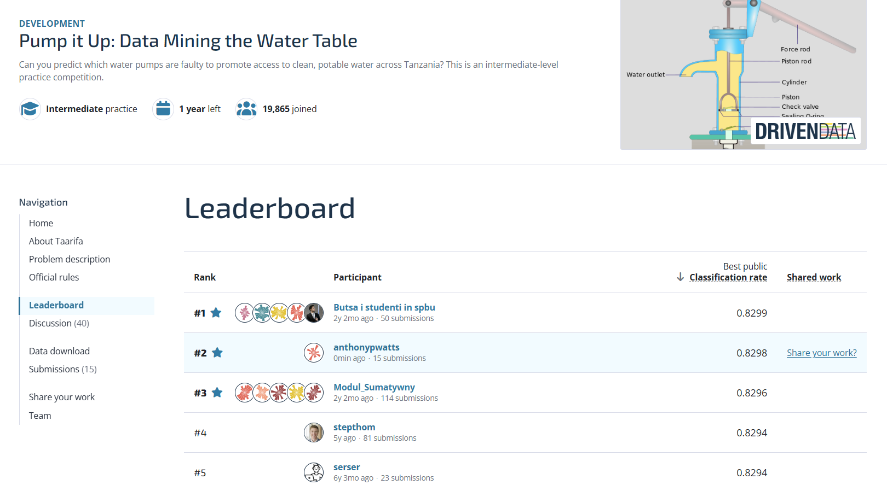

Overall plan68 / 68 checkpoints
CurrentSeed-20260824 deep archive scored 0.8298 and was observed at public rank 2
- Features fully examined
- 36 / 36
Physical hierarchy screens retained the granular features - DrivenData submissions
- 15Total
- Best score
- 0.8298Deep archive synthesis · seed 20260824
- Target score
- 0.8260Stretch
- Used today (UTC)
- 3 / 3
Public leaderboard result
Observed 23 August 2026 · rank 2 · score 0.8298 · 0.0001 behind the displayed leader

Now
Preserve the selected model and stop adaptive tuning.
Recorded: the seed-20260824 deep archive scored 0.8298 publicly, exceeded the 0.826 target and was observed at rank 2.
- Preserve the exact validated CSV, manifest, component weights and SHA-256.
- Keep the frozen-development and used-local-test evidence beside the public score.
- Retain the third-slot submission record and its seed-specific SHA-256.
- Record private-leaderboard performance when it becomes available.
Boundary: rank 2 is a time-specific observation; 0.8298 and the validated artefact are the durable evidence.
Next: move attention back to assessed course work rather than tune against public feedback.
Course workflow
Ten course steps. Iteration is expected; checkpoints advance only when evidence exists.
DoneActiveQueued
| Course step | Status | Progress | Evidence or next gate |
|---|---|---|---|
| Step 01Define the goal & scope | Done | 3 / 3 | Problem, users, metric, competition rules and data boundary recorded. |
| Step 02Gather the data | Done | 2 / 2 | Training features, labels and test inputs are present; source structure and column policy are recorded. |
| Step 03Explore the data | Done | 4 / 4 | Maintained overall report and 117 predictor notebooks cover structure, distributions, limitations, relationships and feature families. |
| Step 04Clean & preprocess the data | Done | 3 / 3 | Guarded cleanup and fold-fitted preprocessing are implemented and have run inside a complete pipeline across all five development folds. |
| Step 05Select & engineer features | Done | 36 / 36audit · separate metric | All candidates are audited; the final synthesis retains accepted features plus the supported identity, frequency and spatial-height representations. |
| Step 06Define the ML task | Done | 4 / 4 | Multiclass classification, accuracy, class imbalance, label integrity and exact feature/label ID alignment are recorded. |
| Step 07Partition the data | Done | 3 / 3 | A stratified 20% local test set and five development folds are frozen with seeds and fingerprints; the majority reference is recorded. |
| Step 08Select & train candidate methods | Done | 3 / 3 | Eleven classifier families are reproducibly evaluated; seven bounded MLP configurations and 84 no-refit ANN blends produced no promotion. |
| Step 09Evaluate & interpret results | Done | 3 / 3reference + 20 workflows | The seed-20260824 deep archive led development at 81.898%, the used local test at 81.397% and the public submissions at 0.8298. |
| Step 10Deploy & iterate | Done | 3 / 3 | The selected seed-20260824 deep archive scored 82.98% publicly, exceeded the 82.60% target and was observed at rank 2. |
- Training rows
- 59,400
- Test rows
- 14,850
- Candidate predictors
- 36
- Target classes
- 3
- Metric
- Accuracy
- Locally evaluated
- 21